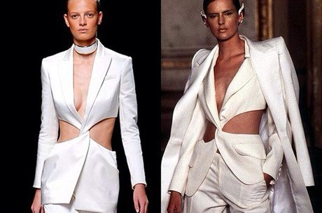

Se você já passou dessa fase das ideias e começou seu negócio, com certeza deve ter parado para pensar:
E agora, o que devo fazer?
Preciso formalizar meu negócio (constituição da pessoa jurídica - CNPJ)?
Qual tipo societário devo seguir (EI, EIRELI, LTDA e S.A.)?
Qual enquadramento de porte (MEI, ME e EPP)?
E o regime tributário (simples nacional, lucro presumido, lucro real)?
Se você já iniciou seu negócio e não se atentou sobre isso, a hora é agora!
Respondendo, a formalização é essencial para o seu negócio, primeiro para a proteção do seu patrimônio pessoal, segundo pelas vantagens com linhas de crédito e terceiro pela possibilidade de tributação reduzida.
Quanto à escolha do tipo societário se será, por exemplo, Empresa Individual (EI), Empresa Individual de Responsabilidade Limitada (EIRELI), Empresa Limitada (LTDA) ou Sociedade Anônima (SA), é importante que entenda qual o tipo do seu negócio e se há necessidade de ter sócios para entrarem com capital.
Para todas essas questões, além das dúvidas quanto ao enquadramento de porte e o Regime tributário, é muito importante procurar um profissional da área para ajudá-lo!
Antes de tudo, um resumo rápido sobre Propriedade Intelectual:
Propriedade Intelectual é gênero, e se ramifica em Propriedade Industrial(Lei 9.279/96), Direitos Autorais (Lei 9.610) e Proteção sui generis.
O Desenho Industrial é protegido pelo instituto da Propriedade Intelectual, e é considerado (Art. 95) "a forma plástica ornamental de um objeto ou o conjunto ornamental de linhas e cores que possa ser aplicado a um produto, proporcionando resultado visual novo e original na sua configuração externa e que possa servir de tipo de fabricação industrial."
Ex: Um desenho de uma roupa, que possa ser reproduzida em grande escala, pode ser protegido por meio do registro, mas algo puramente artístico não é protegido por essa lei, por exemplo.
Assim, quando o registro é concedido, a pessoa que requereu passa a ter o direito de impedir que alguém, sem o seu consentimento, produza, use, coloque a venda, venda ou importe aquele produto.
Por fim, respondendo à pergunta, quando devo fazer o registro do desenho?
Sempre que for necessário manter aquele determinado modelo por muito tempo! Caso contrário, não vale o tempo e o custo.
Obs: O registro dura 10 anos, prorrogáveis por mais 3 períodos de 5 anos.
Copyright é uma proteção conferida pela Lei 9.610/98 aos autores de obras intelectuais, artísticas, científicas e literárias.
Muitas pessoas dizem que Direitos autorais e Copyright são a mesma coisa. Todavia, enquanto direitos autorais existe independente do registro, pois está protegido constitucionalmente, o Copyright é o direito do autor registrado.
Nesse sentido, os autores terão sua obra protegida, independente do registro. Em consequência disto, podem reivindicar a autoria da obra, retirá-la de circulação e suspender a utilização, além de terem direitos morais inalienáveis e irrenunciáveis. (art. 27 da Lei 9.610).
No universo fashion existem muitos casos de cópia e contrafação. Nessas situações, as peças não são meras inspirações. Não bastasse isso, também não há atribuição de créditos ao verdadeiro autor.
Existem grandes marcas que já judicializaram casos evidentes de cópia, enquanto outras não o fizeram, por outras justificativas. No caso demonstrado abaixo, a marca não se dispôs judicializar sob o argumento de que se “tratava de algo clássico”, e, portanto, não havia que se falar em lesão.

(Foto: Reprodução Instagram1. Balmain vs Givanchi - desfile da Balmain de 2019 apresentou um modelo de Blazer similar àquele apresentado pela Givenchy em 1997, não consideraram uma lesão, pois blazer seria algo clássico).
>fonte